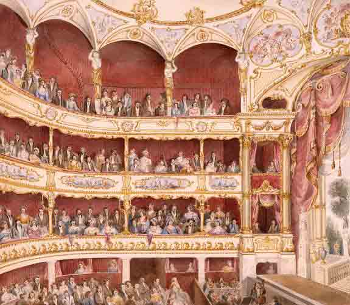
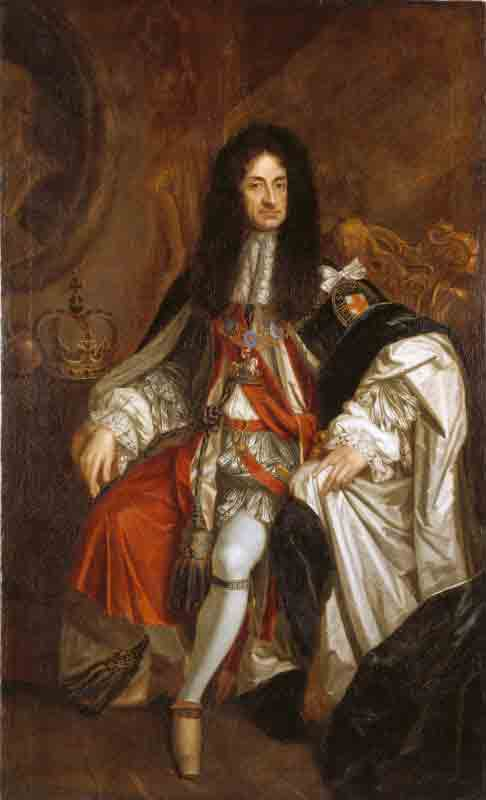

Das
geheime
Leben
der
Kapitale
Im Jahre 1660 beginnt der hohe beamte Samuel Pepys Tagebuch zu schreiben - eines
der freimütigsten der Geschichte - und schafft damit ein einzigartiges
Zeugnis des London seiner Epoche. In Zierlicher Kurzschrift notiert der Staatsdiener den Alltag einer Stadt
im Umbruch, nach den Wirren des Bürgerkrieges und dem Ende der puritanischen Republik Oliver Cromwells.
Pepys schilderd den Prunk des neuen Königs ebenso wie die intriegen des Adels, das Liebesleben der Reichen Bürger
ebenso wie die Leidenschaften der einfachen Leute.
Und er berichtet als Augenzeuge von den Großen Katastrophen seiner Zeit:
der Pest und dem Brand, der weite Teile der Stadt verwüstet.
Er hat nichts zu bereuen. Er hat nichts, auf das er stolz sein könnte. Trotdem kauft Samuel Pepys. 26 Jahre
alt, Sekretär im britischen Schatzamt, im Dezember 1659 beim Schreibwarenhändler John Cade in der Straße Cornhill
ein papiergebundenes Notizbuch, zieht zu Hause auf jeder Seite links und oben einen Rand mit roter Tinte. Füllt sie vom
Neujahrsmorgen an jeden Tag mit den winzigen Zeichen einer Kurzschrift, zwei nis fünf Millimeter groß. Vertraut ihnen sein Leben an.
Über die Gründe werden Historiker rätseln. Die Zeit kennt kaum Vorbilder für die einsame
Leidenschaft des Samuel Pepys. Allenfalls die Arbeitsjournale, in denen seine Vorgesetzten ihre Konferenzen
und Dienstreisen festhalten, oder die Übungen in christlicher Selbstprüfung,
welche die puritanischen Prediger empfehlen. Pepys aber zeigt weder Zerknischung noch
Ordnungssinn. Er hält gleichbleibenden Abstand zu sich un der Welt, bedenkt das Wetter,
seine Verdauung, seine Pickel und die Unarten seines Hundes mit genau jedem Gleichmit, mit dem
er Seeschlachten und Krönungen notiert: "Die Straßen sind staubig, die Fliegen schwirren munter umher,
und die Rosen stehen in vollem Grün", notiert er in einem warmen Januar. "Derartiges hat es in
unseren Breiten noch nicht gegebene. Heute werden zahlreiche wetere Anhänger der
fünften Monarchie gehängt."
Doch die Welsekunde, in der sein Lebensprotokoll beginnt, ist eine, die Rechenschaft verlangt. 1660 ist
der Wendepunkt, an dem die Armee unter General Monek das puritanische Parlament entmachtet und die Monarchie der
Stuarts wieder aufrichtet. Es ist das Jahr, in dem die Hauptstadt, in der einst König Karl I.
geköpft wurde (siehe Seite 60), dessen Sohn mit Blumenteppichen und Glockengeläut
empfängt, mit Brunnen, in denen Win fließt, mit Damen an Fenstern und Balkonen.
Es beginnt die Zeit der Restauration, der Wiederherstellung königliher Herr-

Theratervorführungen werden nach dem strengen Regiment unter Comwell zum neuen
Zeitvertreib der Wohlhabenden - und Samuel Pepys liebt diese Art der
Zerstreuung. In den elf Jahren ihrer Herrschaft hatten die Puritaner alle Bühnen
geschlossen, weil ihnen das dort Dargebotene als verwerflich galt. Umso
üppiger und frivoler sind nun die Stücke der Restaurationszeit,
in denen erstmals auch Frauen auftreten.
schaft, in der Lebensentwürfe über Nacht wertlos werden und morgen schon böse sein kann,
was gestern noch gut war. Es sidn die Tage, in denen der neue, alte Staat von seinen Untertanen
wissen will:
Was hast du getan in jenen elf herben Jahren der Republik des Heerführers und Lordprotektors Oliver Cromwell?
Als Pepys am 1. Januar des Wendejahres 1660 sein Tagebuch beginnt, weiß er nicht, wem -
außer dem schweigsamen Papier - er noch trauen kann in dieser schwankenden Zeit.
Er ahnt nicht, dass sein republikanischer Cousin und Wohltäter Edward Montagu, der einst
für eine glanzvolle Karriere in der Armee des Puritaners Oliver Cromwell mit seinem
royalistischen Vater gebrochen hat und dem Pepys jetzt als Sekretär dienst, nur auf den richtigen Augenblick wartet,
um Karls II. noch in dessen Exil auf dem Kontinent seine Loyalität zu erklären. Dass der
"ängstliche Gentleman" George Downing, sein Vorgesetzer im Schatzamt, der gerade
noch von den Niederlanden die Vertreibung des Königs erreicht hat, bereits dem
Monarchen seine Dienstgeheimnisse andient und für einen Ritterschlag Schlange steht.
Dafür hört er, wie seine alten Studienkollegen den Jargon der Republik abstreifen wie einen
unmodernen Mantel und selbst die Straßenjungen statt "Leck mich am Arsch" jetut
"leck mich am Parlament" rufen. Er erlebt, wie so mancher seiner Kollegen seine
Lebenstellung verliert, wie reiche Wendehälse sich mit viel Geld die Gnade der Obrigkeit
zurückkaufen, wie an der Börse Freudenfeuer brennt. "Jeder trinkt jetzt ohne Furcht
auf das Wohl des Königs", notiert er "während man es vorher nur hinter vorgehaltener
Hand wagte."
Pepys aber lebt sein Leben weiter. Was bleibt ihm übrigt? Er übt auf dem
Flageolett, prügelt das Dienstmädchen, hat ab und zu "Kopfschmerzen und Übelkeit vom unmäßigen Trinken am
Vorabend", und macht Karriere.
Im Juni 1660 verschafft ihm sein Mentor Montagu, der zukünftige "Erl von Sandwich,
Viscount Hinchingbrooke und Baron von St Neot's", einen hohen Pos-
König Karl II. kehrt 1660 aus dem Exila nach England zurück. Sein zügelloser
Lebensstil und eine ausgeprägte Genuss-sucht werden zum Leitbild einer ganzen Epoche-
auch für Pepys

-ten im Flottemamt, der Pepys 350 Pfund im Jahr einbringt. Dazu ein
weiteres Salär im Siegelamt in Hoge von drei Prund pro Tag. "das Mylord
mir zufällig verschaffte, ohne dass er oder ich wissen konnten, wie einträglich es sein würde.".
Er wohnt jetzt mit seiner Frau, seinem Sekretär, seiner Diestmagt Jane und deren Bruder in
einem neuen Haus, das dem Fottenamt gehört, an der Seething Lane. Und er
weiß: Dass er sich jetzt "in einer sehr angenehmen und aufstrebenden Verhältnisen" wiederfindet, hat er dem neuen
Regime zu verdanken. Und so steht er am 23. April 1661 artig um vier Uhr früh auf, um einen guten Platz für
die Krönungszeremonier in der Westminster Abbey zu ergattern. Die Straßen sind mit blauem Tuch ausgelegt, gesäumt von Tribünen und 10 000 Zuschauern.
Der König, "barhäuptig in seinem Gewand", sieht "großartig" aus.
Als die Krone den Kopf des Monachen berührt, geht ein "Jubelruf durchs
Kirchenschiff". Lords und Bischöfe knien nieder, der Lordkanzler verliest eine Generalamnestie, und
ein Adeliger wird silverne Gedenkmünzen in die Menge.
Pepys aber muss "so dringend pinkeln", dass er die Zeremonie vorzeitig
DIE BITTERE STRENGE DER REPUBlIK IST VORÜBER
verlässt. Nach den Feierlichkeiten sieht er Freundenfeuer in seiner Stadt brennen,
und "vornehme Herrschaften" nötigen ihn und seine Frau, auf einem Reisig-bündel niederzuknien und auf das Wohl des
Königs zu trinken: "Uns erschien das eine selsame Lustbarkeit."
Dennoch hebt er an diesem Abend noch so oft und so bereitwillig sein Glas auf den neuen Herrscher,
dass nachts das Zimmer um ihn kreist und er morgens
"von oben bis unten besudelt" aufwacht.
GERADE ZWÖLF JAHRE ist es her, dass
Samuel Pepys als junger, zorniger Republikaner sich inmitter erregt stöhnender Zuschauer an der Enthauptung Karls I.
freute und
DIE BITTERE STRENGE DER REPUBlIK IST VORÜBER
dem toten Monarchen noch Verwünschungen hinterherschickte.
Jetzt verzeichnet er mit "tiefer Befriedigung" die Hinrichtung der Männer,
die damals das Todesurteil unterschrieben haben und vom neuen
Regime als "Königsmörder" bezeichnet werden. Sieht auch
fasziniert zu, wie einer von ihnen,
Beet zu gießen, sich rasieren zu lassen, einen Besuch zu machen oder zu lächelt.
Das Weihnachtsfest galt als paptistischer Aberglaube und wurde verfolgt:
Ein Zeitgenosse berichtet, wie Soldaten eine Kirche umkreisen, die Andacht
unterbrachen und alle Teilnehmer festnahmen.
Alttestamentarische Strenge drag den Menschen unter die Haut, blähte die Gewissen
auf wie Schwämme.
der Generalmajor Thomas Harrison, gehängt, gerädert und gevierteilt wird "und dazu
so eine heitere Miene" macht, "wie es einem Mann in solch einer Situation
nur möglich ist": Kopf und Herz werden "der Menge presäntiert, die in
lauten Jubel" ausbricht.
Pepys mietet eigens ein Zimmer am Tower Hilld, um vom Fenster aus den Tod des
einstigen Marineschatzmeisters Sir Henry Vane zu vegaffen - doch
leider übertönen die Trompeter die letzten Wore des Opfers, und das Schaffot ist
so umdrängt, dass dem Voyer die Sicht auf das Geschehen versperrt ist.
Doch wenn ein alter Schulkamerad daran erinnert, dass auch Pepys einmal jender
puritanischen, kurz geschorenenen republikanischen "Rundköpfe" war, bekommt er es mit der Angst
zu tun. Und wenn seine Kollegen vom Marineamt beim Umtrunkt im "Delfin"
einander ihr Verhalten in den Zeiten der Republick Vorrechnen, schweigt er Peinlich berührt.
Hat er nicht selbst, geboren von einer müden puritanischen Mutter, die
puritanische Kaderschmieder der St-Pauls's Schule besucht?
Und hat er nicht seit seinem 17. Lebensjahr die bittere Luft von Oliver Cromwells
Gottesrepublik in vollen Zügen eingeatmet?
Das war die Zeit, in der Maibäume und Pferderennen, Hahnenkämpfe
und Theater, Spiele und Sportveranstaltungen verboten waren, in der
Liebesbriefe so sündige waren wie gestäkte Kragen. Mittwochs durfte kein
Fleisch verzehrt werden, und sonntags war es verpöhnt, ein